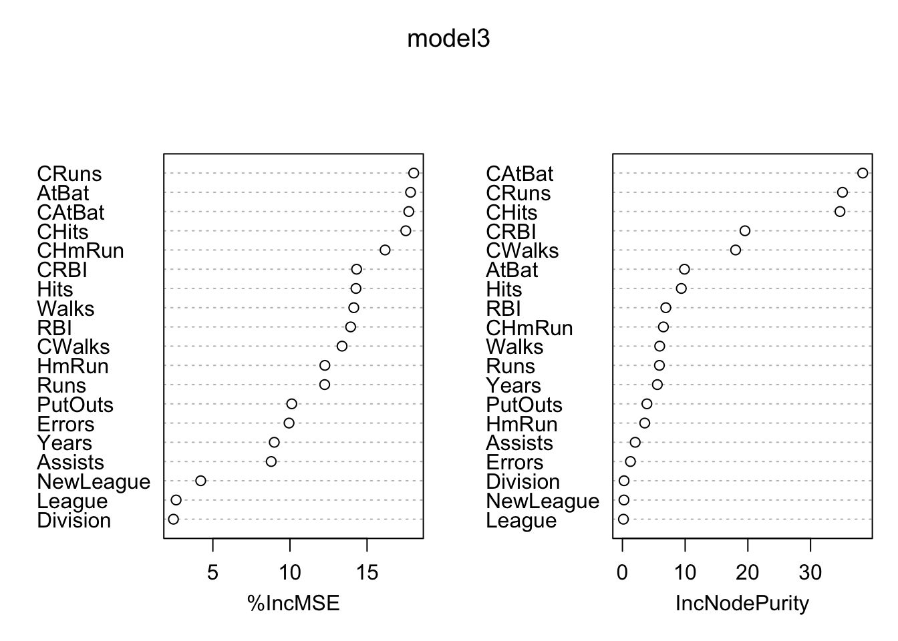
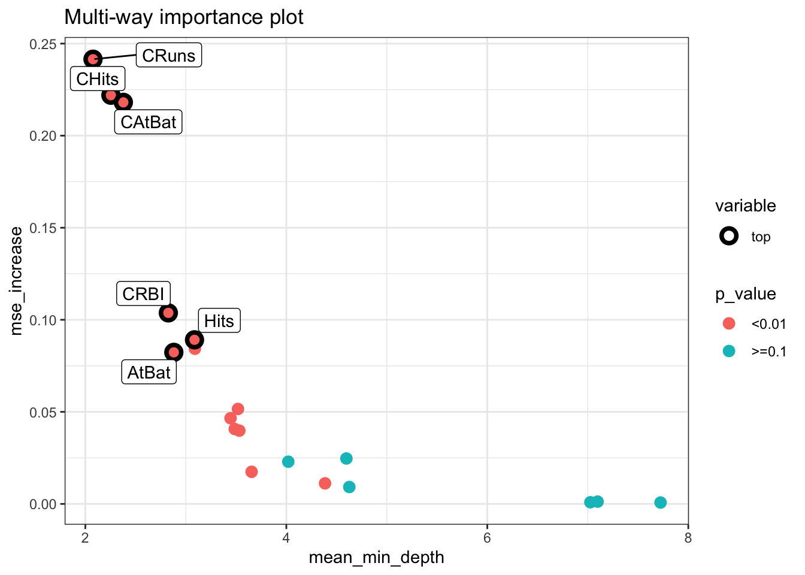
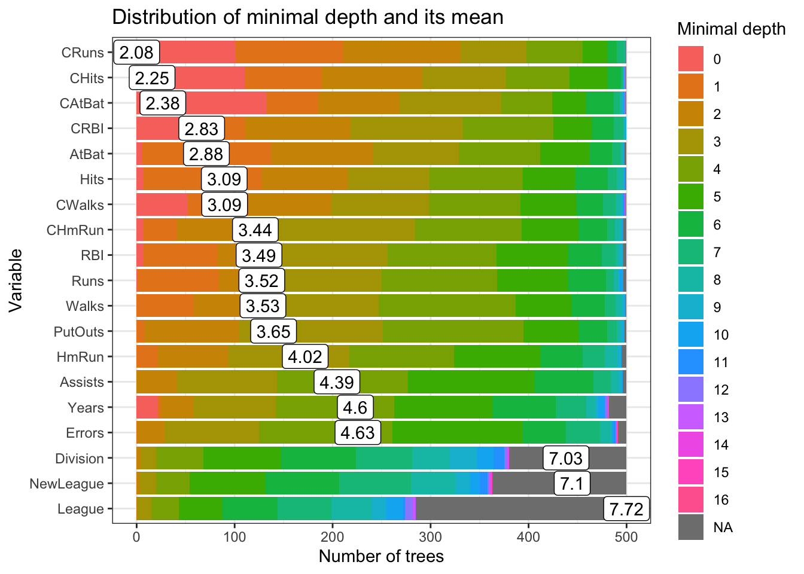
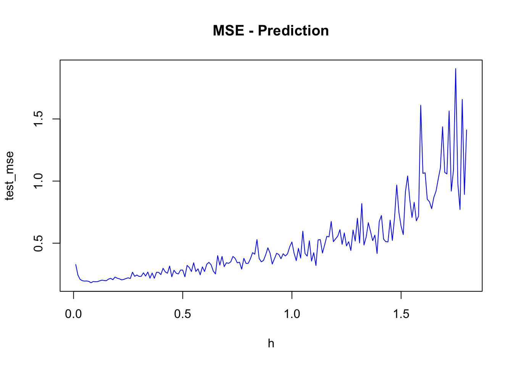
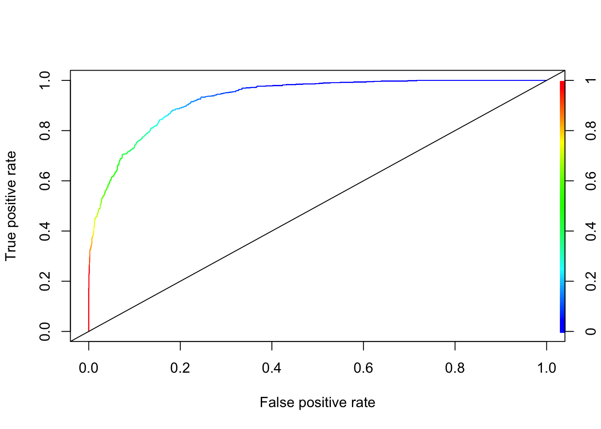

Chapter 14 Ensemble Applications
To conclude this section we will cover classification and regression applications using bagging, random forest, boosting and SVM. First we will start with a classification problem. In comparing different ensemble methods, we must look not only at their accuracy, but evaluate their stability as well.
14.1 Classification
We will again predict survival on the Titanic, using CART, bagging and random forest. We will use the following variables:
survived - 1 if true, 0 otherwise;
sex - the gender of the passenger;
age - age of the passenger in years;
pclass - the passengers class of passage;
sibsp - the number of siblings/spouses aboard;
parch - the number of parents/children aboard.
library(PASWR)
library(ROCR)
library(rpart)
library(randomForest)
# Data
data(titanic3)
nam <- c("survived", "sex", "age", "pclass", "sibsp", "parch")
df <- titanic3[, nam]
dfc <- df[complete.cases(df), ]
dfc$survived <- as.factor(dfc$survived)
AUC1 <- c()
AUC2 <- c()
AUC3 <- c()
n = 100
B = 100
for (i in 1:n) {
set.seed(i+i*100)
ind <- sample(nrow(dfc), nrow(dfc), replace = TRUE)
train <- dfc[ind, ]
test <- dfc[-ind, ]
p = ncol(train)-1
#3 Methods
model1 <- rpart(survived~sex+age+pclass+sibsp+parch,
data=train, method="class") #Single tree, pruned
model2 <- randomForest(survived~sex+age+pclass+sibsp+parch,
ntree = B, mtry = p, data = train) #Bagged
model3 <- randomForest(survived~sex+age+pclass+sibsp+parch,
ntree = B, data = train) # RF
phat1 <- predict(model1, test, type = "prob")
phat2 <- predict(model2, test, type = "prob")
phat3 <- predict(model3, test, type = "prob")
#AUC1
pred_rocr1 <- prediction(phat1[,2], test$survived)
auc_ROCR1 <- performance(pred_rocr1, measure = "auc")
AUC1[i] <- auc_ROCR1@y.values[[1]]
#AUC2
pred_rocr2 <- prediction(phat2[,2], test$survived)
auc_ROCR2 <- performance(pred_rocr2, measure = "auc")
AUC2[i] <- auc_ROCR2@y.values[[1]]
#AUC3
pred_rocr3 <- prediction(phat3[,2], test$survived)
auc_ROCR3 <- performance(pred_rocr3, measure = "auc")
AUC3[i] <- auc_ROCR3@y.values[[1]]
}
model <- c("Single-Tree", "Bagging", "RF")
AUCs <- c(mean(AUC1), mean(AUC2), mean(AUC3))
sd <- c(sqrt(var(AUC1)), sqrt(var(AUC2)), sqrt(var(AUC3)))
data.frame(model, AUCs, sd) ## model AUCs sd
## 1 Single-Tree 0.8129740 0.02585391
## 2 Bagging 0.8128962 0.01709652
## 3 RF 0.8409750 0.01659263There is a consensus that we can determine a bagged model’s test error without using cross-validation. The reason for this is usually stated that each bootstrapped sample contains about two-thirds of the original dataset’s observations. Out-of-Bag (OOB) observations are the remaining 1/3 of the observations that were not used to fit the bagged tree.
We did the bagging by using randomForest in the previous application. Let’s see if we can obtain a similar result with our manual bagging using rpart() pruned and unpruned:
n <- 100
B <- 500
AUCp <- c()
AUCup <- c()
for (i in 1:n) {
set.seed(i+i*100)
ind <- sample(nrow(dfc), nrow(dfc), replace = TRUE)
train <- dfc[ind, ]
test <- dfc[-ind, ]
phatp <- matrix(0, B, nrow(test))
phatup <- matrix(0, B, nrow(test))
for (j in 1:B) {
set.seed(j+j*2)
ind <- sample(nrow(train), nrow(train), replace = TRUE)
tr <- train[ind, ]
modelp <- rpart(survived ~ sex + age + pclass + sibsp + parch,
data = tr, method = "class") # Pruned
modelup <- rpart(survived ~ sex + age + pclass + sibsp + parch,
data = tr,
control = rpart.control(minsplit = 2, minbucket = 1
, cp = 0),
method = "class") # unpruned
phatp[j, ] <- predict(modelp, test, type = "prob")[, 2]
phatup[j, ] <- predict(modelup, test, type = "prob")[, 2]
}
# Averaging for B Trees
phatpr <- apply(phatp, 2, mean)
phatupr <- apply(phatup, 2, mean)
# AUC pruned
pred_rocr <- prediction(phatpr, test$survived)
auc_ROCR <- performance(pred_rocr, measure = "auc")
AUCp[i] <- auc_ROCR@y.values[[1]]
# AUC unpruned
pred_rocr <- prediction(phatupr, test$survived)
auc_ROCR <- performance(pred_rocr, measure = "auc")
AUCup[i] <- auc_ROCR@y.values[[1]]
}
mean(AUCp)## [1] 0.8523158sqrt(var(AUCp))## [1] 0.01626892mean(AUCup)## [1] 0.8180802sqrt(var(AUCup))## [1] 0.01693003We can see a significant reduction in uncertainty and improvement in accuracy relative to a single tree. Moreover, our manual bagging with the cross-validated (pruned) single tree using rpart() doing a better job than the bagging using randomForest(). When we use “unpruned” single-tree using rpart() for bagging, the result becomes very similar to one that we obtain with random forest. Further, the number of bootstrapped trees (B) would be a hyperparameter to tune in bagging. You can try the same script multiple times with different B vales such as 50, 100, 150. In our experiment (not shown here), it seems that results are not sensitive to B as long as B is large enough like 50 and more.
This would also be the case in regression trees, where we would be averaging yhat’s and calculating RMSPE and its standard deviations instead of AUC.
14.2 Regression
Consider the same data set we used earlier chapters to predict baseball player’s salary:
library(ISLR)
remove(list = ls())
data(Hitters)
df <- Hitters[complete.cases(Hitters$Salary), ]Let’s use only a single tree with bagging:
library(rpart)
# Data
df$logsal <- log(df$Salary)
df <- df[, -19]
n = 100
B = 500
RMSPEp <- c()
RMSPEup <- c()
for (i in 1:n) {
set.seed(i+i*8)
ind <- sample(nrow(df), nrow(df), replace = TRUE)
train <- df[ind, ]
test <- df[-ind, ]
yhatp <- matrix(0, B, nrow(test))
yhatup <- matrix(0, B, nrow(test))
for (j in 1:B) {
set.seed(j+j*2)
ind <- sample(nrow(train), nrow(train), replace = TRUE)
tr <- train[ind, ]
modelp <- rpart(logsal ~ ., data = tr, method = "anova") # Pruned
modelup <- rpart(logsal ~ ., data = tr,
control = rpart.control(minsplit = 2, minbucket = 1
,cp = 0),
method = "anova") # unpruned
yhatp[j,] <- predict(modelp, test)
yhatup[j,] <- predict(modelup, test)
}
# Averaging for B Trees
yhatpr <- apply(yhatp, 2, mean)
yhatupr <- apply(yhatup, 2, mean)
RMSPEp[i] <- sqrt(mean((test$logsal - yhatpr)^2))
RMSPEup[i] <- sqrt(mean((test$logsal - yhatupr)^2))
}
mean(RMSPEp)## [1] 0.501984sqrt(var(RMSPEp))## [1] 0.05817388mean(RMSPEup)## [1] 0.4808079sqrt(var(RMSPEup))## [1] 0.06223845With and without pruning, the results are very similar. Let’s put all these together and do it with Random Forest:
library(randomForest)
library(rpart)
# Data
remove(list = ls())
data(Hitters)
df <- Hitters[complete.cases(Hitters$Salary), ]
df$logsal <- log(df$Salary)
df <- df[, -19]
n <- 100
B <- 500
RMSPE1 <- c()
RMSPE2 <- c()
RMSPE3 <- c()
for (i in 1:n) {
set.seed(i+i*8)
ind <- sample(nrow(df), nrow(df), replace = TRUE)
train <- df[ind, ]
test <- df[-ind, ]
p = ncol(train)-1
model1 <- rpart(logsal~., data =train) # Single Tree
model2 <- randomForest(logsal~., ntree = B, mtry = p, data = train) #Bagged
model3 <- randomForest(logsal~., ntree = B, localImp = TRUE, data = train) # RF
yhat1 <- predict(model1, test)
yhat2 <- predict(model2, test)
yhat3 <- predict(model3, test)
RMSPE1[i] <- sqrt(mean((test$logsal - yhat1)^2))
RMSPE2[i] <- sqrt(mean((test$logsal - yhat2)^2))
RMSPE3[i] <- sqrt(mean((test$logsal - yhat3)^2))
}
model <- c("Single-Tree", "Bagging", "RF")
RMSPEs <- c(mean(RMSPE1), mean(RMSPE2), mean(RMSPE3))
sd <- c(sqrt(var(RMSPE1)), sqrt(var(RMSPE2)), sqrt(var(RMSPE3)))
data.frame(model, RMSPEs, sd) ## model RMSPEs sd
## 1 Single-Tree 0.5739631 0.05360920
## 2 Bagging 0.4807763 0.06119187
## 3 RF 0.4631194 0.06045187As you can see, random forest has the lowest RMSPE and thus performs the best, whereas the CART model has the highest RMSPE.
14.3 Dataset-level explainers
varImpPlot(model3)
We will now dig deeper with randomForestExplainer (see its vignette) (Paluszyńska 2017) and DALEX packages. Assuming that the observations form a representative sample from a general population, dataset-level explainers can provide information about the quality of predictions for the population.
library(randomForestExplainer)
library(DT)
# randomForestExplainer()
min_depth_frame <- min_depth_distribution(model3)
importance_frame <- measure_importance(model3)
tabl <- cbind(importance_frame[,1], round(importance_frame[,2:7],4))
datatable(tabl, rownames = FALSE, filter="top", options = list(pageLength = 10, scrollX=T) )plot_multi_way_importance(importance_frame, x_measure = "mean_min_depth",
y_measure = "mse_increase",
size_measure = "p_value", no_of_labels = 6)
plot_min_depth_distribution(min_depth_frame, mean_sample = "all_trees", k =20,
main = "Distribution of minimal depth and its mean")
partialPlot(model3, test, CRuns, xlab="CRuns",
main="Effects of CRuns",
col = "red", lwd = 3)
14.4 Boosting Applications
We need to tune the boosting applications with gbm(). There are three tuning parameters: h, B, and D. We will do the tuning with grid search and apply parallel processing. We will have both regression and classification problems. Finally we will compare OLS, CART, Bagging, RF and boosting.
14.4.1 Regression
library(ISLR)
data(Hitters)
df <- Hitters[complete.cases(Hitters$Salary), ]
df$Salary <- log(df$Salary)
# Test/Train Split
set.seed(1)
ind <- sample(nrow(df), nrow(df), replace = TRUE)
train <- df[ind, ]
test <- df[-ind, ]This will give you an idea how tuning the boosting by using h would be done:
library(gbm)
h <- seq(0.01, 1.8, 0.01)
test_mse <- c()
# D = 1 and B = 1000
for(i in 1:length(h)){
boos <- gbm(Salary~., distribution ="gaussian", n.trees=1000,
interaction.depth = 1, shrinkage = h[i], data = train)
prboos <- predict(boos, test, n.trees = 100)
test_mse[i] <- mean((test$Salary - prboos)^2)
}
plot(h, test_mse, type = "l", col="blue", main = "MSE - Prediction")
h[which.min(test_mse)]## [1] 0.08min(test_mse)## [1] 0.181286test_mse[10]## [1] 0.1895487A complete but limited grid search is here:
library(gbm)
h <- seq(0.01, 0.3, 0.01)
B <- c(100, 300, 500, 750, 900)
D <- 1:2
grid <- as.matrix(expand.grid(D, B, h))
mse <-c()
sdmse <-c()
for(i in 1:nrow(grid)){
test_mse <- c()
for (j in 1:20) {
try({
set.seed(j)
ind <- sample(nrow(df), nrow(df), replace = TRUE)
train <- df[ind, ]
test <- df[-ind, ]
boos <- gbm(Salary~., distribution ="gaussian", n.trees=1000,
interaction.depth = grid[i,1], shrinkage = grid[i,3], data = train)
prboos <- predict(boos, test, n.trees = grid[i,2])
test_mse[j] <- mean((test$Salary - prboos)^2)
},
silent = TRUE)
}
mse[i] <- mean(test_mse)
sdmse[i] <- sd(test_mse)
}
min(mse)## [1] 0.2108654grid[as.numeric(which.min(mse)), ]## Var1 Var2 Var3
## 2e+00 9e+02 1e-0214.4.2 Random search with parallel processing
Now, we will apply a random grid search (see Random Search for Hyper-Parameter Optimization) (Bergstra and Bengio 2012). We also apply a parallel multicore processing using doParallel and foreach() to accelerate the grid search.
library(gbm)
library(doParallel)
library(foreach)
h <- seq(0.001, 0.25, 0.001)
B <- seq(100, 800, 20)
D <- 1:4
grid <- as.matrix(expand.grid(D, B, h))
#Random grid-search
conf_lev <- 0.95
num_max <- 5
n <- log(1-conf_lev)/log(1-num_max/nrow(grid))
set.seed(123)
ind <- sample(nrow(grid), nrow(grid)*(n/nrow(grid)), replace = FALSE)
comb <- grid[ind, ]
# Set-up for multicore loops
trials <- 1:nrow(comb)
numCores <- detectCores()
registerDoParallel(numCores)
# Bootstrapping with parallel process
lst <- foreach(k=trials, .combine=c, .errorhandling = 'remove') %dopar% {
test_mse <- c()
for (j in 1:10) {
try({
set.seed(j)
ind <- sample(nrow(df), nrow(df), replace = TRUE)
train <- df[ind, ]
test <- df[-ind, ]
boos <- gbm(Salary~., distribution ="gaussian", n.trees=1000,
interaction.depth =comb[k,1], shrinkage = comb[k,3], data = train)
prboos <- predict(boos, test, n.trees = comb[k,2])
test_mse[j] <- mean((test$Salary - prboos)^2)
},
silent = TRUE)
}
list(c(k, mean(test_mse), sd(test_mse)))
}
stopImplicitCluster()
unlst <- do.call(rbind, lst)
result <- cbind(comb[unlst[,1],], unlst)
sorted <- result[order(result[,5]), -4]
colnames(sorted) <- c("D", "B", "h", "MSPE", "sd")
head(sorted)## D B h MSPE sd
## [1,] 2 360 0.024 0.2057671 0.05657079
## [2,] 2 300 0.024 0.2060013 0.05807494
## [3,] 2 340 0.022 0.2061847 0.05827857
## [4,] 2 340 0.023 0.2061895 0.05823719
## [5,] 2 320 0.023 0.2062056 0.05874694
## [6,] 2 360 0.021 0.2062124 0.05785775You can increase for (j in 1:10) to for (j in 1:50) depending on your computer’s capacity.
14.4.3 Boosting vs. Others
Let’s add OLS to this competition just for curiosity. Here is a one possible script:
library(ISLR)
library(randomForest)
library(rpart)
df <- Hitters[complete.cases(Hitters$Salary), ]
df$Salary <- log(df$Salary)
# Containers
mse_cart <- c(0)
mse_bag <- c(0)
mse_rf <- c(0)
mse_boost <- c(0)
mse_ols <- c(0)
for(i in 1:200){
set.seed(i)
ind <- sample(nrow(df), nrow(df), replace = TRUE)
train <- df[ind, ]
test <- df[-ind, ]
OLS <- lm(Salary~., data = train)
pols <- predict(OLS, test)
cart <- rpart(Salary~., data = train)
pcart <- predict(cart, test)
bags <- randomForest(Salary ~., mtry = 19, data = train)
pbag <- predict(bags, test)
rf <- randomForest(Salary ~., data = train)
prf <- predict(rf, test)
boost <- gbm(Salary~., distribution ="gaussian", n.trees = 1000,
data = train) # without a grid search
pboost <- predict(boost, test, n.trees = 100)
mse_ols[i] <- mean((test$Salary - pols)^2)
mse_cart[i] <- mean((test$Salary - pcart)^2)
mse_bag[i] <- mean((test$Salary - pbag)^2)
mse_rf[i] <- mean((test$Salary - prf)^2)
mse_boost[i] <- mean((test$Salary - pboost)^2)
}
# Bootstrapping Results
a <- matrix(c(mean(mse_cart), mean(mse_bag), mean(mse_rf), mean(mse_boost), mean(mse_ols)), 5, 1)
row.names(a) <- c("mse_cart", "mse_bag", "mse_rf", "mse_boost", "mse_ols")
a## [,1]
## mse_cart 0.3172687
## mse_bag 0.2205504
## mse_rf 0.2057802
## mse_boost 0.2454886
## mse_ols 0.4584240b <- matrix(c(sqrt(var(mse_cart)), sqrt(var(mse_bag)), sqrt(var(mse_rf)), sqrt(var(mse_boost)), sqrt(var(mse_ols))), 5, 1)
row.names(b) <- c("mse_cart", "mse_bag", "mse_rf", "mse_boost", "mse_ols")
b## [,1]
## mse_cart 0.07308726
## mse_bag 0.06272648
## mse_rf 0.05976196
## mse_boost 0.05923404
## mse_ols 0.06907506Interesting! The random forest is the winner. However, boosting is not tuned in the algorithm. With the full grid search in the previous algorithm, boosting and RF are close contenders.
Let’s have a classification example.
14.4.4 Classification
A simulated data set containing sales of child car seats at 400 different stores from. We will predict the sale, a binary variable that will be 1 if the sale is higher than 8. See ISLR (ISLR 2021a) for the details.
library(ISLR)
df <- Carseats
str(df)## 'data.frame': 400 obs. of 11 variables:
## $ Sales : num 9.5 11.22 10.06 7.4 4.15 ...
## $ CompPrice : num 138 111 113 117 141 124 115 136 132 132 ...
## $ Income : num 73 48 35 100 64 113 105 81 110 113 ...
## $ Advertising: num 11 16 10 4 3 13 0 15 0 0 ...
## $ Population : num 276 260 269 466 340 501 45 425 108 131 ...
## $ Price : num 120 83 80 97 128 72 108 120 124 124 ...
## $ ShelveLoc : Factor w/ 3 levels "Bad","Good","Medium": 1 2 3 3 1 1 3 2 3 3 ...
## $ Age : num 42 65 59 55 38 78 71 67 76 76 ...
## $ Education : num 17 10 12 14 13 16 15 10 10 17 ...
## $ Urban : Factor w/ 2 levels "No","Yes": 2 2 2 2 2 1 2 2 1 1 ...
## $ US : Factor w/ 2 levels "No","Yes": 2 2 2 2 1 2 1 2 1 2 ...#Change SALES to a factor variable
df$Sales <- ifelse(Carseats$Sales<=8, 0, 1)
str(df$Sales)## num [1:400] 1 1 1 0 0 1 0 1 0 0 ...library(PASWR)
library(ROCR)
library(rpart)
library(randomForest)
df <- df[complete.cases(df),]
df$d <- as.factor(df$Sales)
n <- 50
B <- 1000
AUC1 <- c()
AUC2 <- c()
AUC3 <- c()
AUC4 <- c()
for (i in 1:n) {
set.seed(i)
ind <- sample(nrow(df), nrow(df), replace = TRUE)
train <- df[ind, ]
test <- df[-ind, ]
p = ncol(train)-1
# We used two different outcome structure: "Sales" and "d"
# "d" is a factor and "Sales" is numeric
# Factor variable is necessary for RF but GBM needs a numeric variable
# That's sometimes annoying but wee need to be careful about the data
model1 <- rpart(Sales~., data=train[,-12], method = "class")
model2 <- randomForest(d~., ntree = B, mtry = p, data = train[, -1]) #Bagged
model3 <- randomForest(d~., ntree = B, data = train[, -1]) # RF
model4 <- gbm(Sales~., data=train[,-12], n.trees = B,
distribution = "bernoulli") # Boosting without grid search
phat1 <- predict(model1, test[,-12], type = "prob")
phat2 <- predict(model2, test[,-1], type = "prob")
phat3 <- predict(model3, test[,-1], type = "prob")
phat4 <- predict(model4, n.trees = B, test[,-12], type = "response")
#AUC1
pred_rocr1 <- prediction(phat1[,2], test$Sales)
auc_ROCR1 <- performance(pred_rocr1, measure = "auc")
AUC1[i] <- auc_ROCR1@y.values[[1]]
#AUC2
pred_rocr2 <- prediction(phat2[,2], test$d)
auc_ROCR2 <- performance(pred_rocr2, measure = "auc")
AUC2[i] <- auc_ROCR2@y.values[[1]]
#AUC3
pred_rocr3 <- prediction(phat3[,2], test$d)
auc_ROCR3 <- performance(pred_rocr3, measure = "auc")
AUC3[i] <- auc_ROCR3@y.values[[1]]
#AUC4
pred_rocr4 <- prediction(phat4, test$Sales)
auc_ROCR4 <- performance(pred_rocr4, measure = "auc")
AUC4[i] <- auc_ROCR4@y.values[[1]]
}
model <- c("Single-Tree", "Bagging", "RF", "Boosting")
AUCs <- c(mean(AUC1), mean(AUC2), mean(AUC3), mean(AUC4))
sd <- c(sqrt(var(AUC1)), sqrt(var(AUC2)), sqrt(var(AUC3)), sqrt(var(AUC4)))
data.frame(model, AUCs, sd) ## model AUCs sd
## 1 Single-Tree 0.7607756 0.03203628
## 2 Bagging 0.8642944 0.02670766
## 3 RF 0.8778809 0.02356684
## 4 Boosting 0.9176274 0.01791244The results are very telling: booster is a clear winner for prediction accuracy and stability. When we have these machine learning applications, one should always show the “baseline” prediction that we can judge the winner performance: A simple LPM would be a good baseline model:
AUC5 <- c()
for (i in 1:100) {
set.seed(i)
ind <- sample(nrow(df), nrow(df), replace = TRUE)
train <- df[ind, ]
test <- df[-ind, ]
model <- lm(Sales ~ ., data= train[,-12])
phat5 <- predict(model, test[, -12])
pred_rocr5 <- prediction(phat5, test$Sales)
auc_ROCR5 <- performance(pred_rocr5, measure = "auc")
AUC5[i] <- auc_ROCR5@y.values[[1]]
}
mean(AUC5)## [1] 0.9546986sqrt(var(AUC5)) ## [1] 0.0117673I choose this example, not because I want to give you a pessimistic impressions about machine learning applications. But, when we do predictions, we cannot assume that our complex algorithms will always be better than a simple OLS. We judge the success of prediction not only its own AUC and stability, but also how much it improves over a benchmark.
14.4.5 AdaBoost.M1
Let’s apply AdaBoost to our example to see if we can have any improvements
library(JOUSBoost)
library(ISLR)
df <- Carseats
#Change SALES to a factor variable
df$Sales <- ifelse(Carseats$Sales<=8, -1, 1) #JOUSBoost requires -1,1 coding
str(df$Sales)## num [1:400] 1 1 1 -1 -1 1 -1 1 -1 -1 ...# JOUSBoost requires X as a matrix
# so factor variables must be coded as numerical
# With `one-hot()`
library(mltools)
library(data.table)
df_new <- one_hot(as.data.table(df))Now, we are ready:
rnd = 100
AUC <- c()
for (i in 1:100) {
set.seed(i)
ind <- sample(nrow(df_new), nrow(df_new), replace = TRUE)
train <- df_new[ind, ]
test <- df_new[-ind, ]
ada <- adaboost(as.matrix(train[,-"Sales"]),
train$Sales, tree_depth = 1, n_rounds = rnd)
phat <- predict(ada, test, type="prob")
pred_rocr <- prediction(phat, test$Sales)
auc_ROCR <- performance(pred_rocr, measure = "auc")
AUC[i] <- auc_ROCR@y.values[[1]]
}
mean(AUC)## [1] 0.9258234sqrt(var(AUC)) ## [1] 0.0183194It’s slightly better than the gradient boosting (gbm) but not much from LPM.
14.4.6 Classification with XGBoost
Before jumping into an example, let’s first understand about the most frequently used hyperparameters in xgboost. You can refer to its official documentation for more details.
We will classify them in three groups:
- Booster type:
Booster = gbtreeis the default. It could be set togblinearordart. The first one uses a linear model and the second one refers to Dropout Additive Regression Trees. When constructing a gradient boosting machine, the first few trees at the beginning dominate the model performance relative to trees added later. Thus, the idea of “dropout” is to build an ensemble by randomly dropping trees in the boosting sequence. - Tuning parameters (note that when
gblinearis used, onlynround,lambda, andalphaare used):
nrounds= 100 (default). It controls the maximum number of iterations (or trees for classification).
eta= 0.3. It controls the learning rate. Typically, it lies between 0.01 - 0.3.
gamma= 0. It controls regularization (or prevents overfitting - a higher difference between the train and test prediction performance). It can be used as it the brings improvements when shallow (lowmax_depth) trees are employed.max_depth= 6. It controls the depth of the tree.min_child_weight= 1. It blocks the potential feature interactions to prevent overfitting. (The minimum number of instances required in a child node.)subsample= 1. It controls the number of observations supplied to a tree. Generally, it lies between 0.01 - 0.3. (remember bagging).subsample= 1. It control the number of features (variables) supplied to a tree. Bothsubsampleandsubsamplecan be use to build a “random forest” type learner.lambda= 0, equivalent to Ridge regressionalpha= 1, equivalent to Lasso regression (more useful on high dimensional data sets). When both are set different than zero, it becomes an “Elastic Net”, which we will see later.
- Evaluation parameters:
objective= “reg:squarederror” for linear regression, “binary:logistic” binary classification (it returns class probabilities). See the official guide for more options.eval_metric= no default. Depending on objective selected, it could be one of those:mae,Logloss,AUC,RMSE,error- (#wrong cases/#all cases),mlogloss- multiclass.
Before executing a full-scale grid search, see what default parameters provide you. That’s your “base” model’s prediction accuracy, which can improve from. If the result is not giving you a desired accuracy, as we did in Chapter 12, set eta = 0.1 and the other parameters at their default values. Using xgb.cv function get best n_rounds and build a model with these parameters. See how much improvement you will get in its accuracy. Then apply the full-scale grid search.
We will use the same data (“Adult”) as we used in Chapter 11.
library(xgboost)
library(mltools)
library(data.table)
train <- read.csv("adult_train.csv", header = FALSE)
varNames <- c("Age",
"WorkClass",
"fnlwgt",
"Education",
"EducationNum",
"MaritalStatus",
"Occupation",
"Relationship",
"Race",
"Sex",
"CapitalGain",
"CapitalLoss",
"HoursPerWeek",
"NativeCountry",
"IncomeLevel")
names(train) <- varNames
data <- train
tbl <- table(data$IncomeLevel)
tbl##
## <=50K >50K
## 24720 7841# we remove some outliers - See Ch.11
ind <- which(data$NativeCountry==" Holand-Netherlands")
data <- data[-ind, ]
#Converting chr to factor with `apply()` family
df <- data
df[sapply(df, is.character)] <- lapply(df[sapply(df, is.character)],
as.factor)
str(df)## 'data.frame': 32560 obs. of 15 variables:
## $ Age : int 39 50 38 53 28 37 49 52 31 42 ...
## $ WorkClass : Factor w/ 9 levels " ?"," Federal-gov",..: 8 7 5 5 5 5 5 7 5 5 ...
## $ fnlwgt : int 77516 83311 215646 234721 338409 284582 160187 209642 45781 159449 ...
## $ Education : Factor w/ 16 levels " 10th"," 11th",..: 10 10 12 2 10 13 7 12 13 10 ...
## $ EducationNum : int 13 13 9 7 13 14 5 9 14 13 ...
## $ MaritalStatus: Factor w/ 7 levels " Divorced"," Married-AF-spouse",..: 5 3 1 3 3 3 4 3 5 3 ...
## $ Occupation : Factor w/ 15 levels " ?"," Adm-clerical",..: 2 5 7 7 11 5 9 5 11 5 ...
## $ Relationship : Factor w/ 6 levels " Husband"," Not-in-family",..: 2 1 2 1 6 6 2 1 2 1 ...
## $ Race : Factor w/ 5 levels " Amer-Indian-Eskimo",..: 5 5 5 3 3 5 3 5 5 5 ...
## $ Sex : Factor w/ 2 levels " Female"," Male": 2 2 2 2 1 1 1 2 1 2 ...
## $ CapitalGain : int 2174 0 0 0 0 0 0 0 14084 5178 ...
## $ CapitalLoss : int 0 0 0 0 0 0 0 0 0 0 ...
## $ HoursPerWeek : int 40 13 40 40 40 40 16 45 50 40 ...
## $ NativeCountry: Factor w/ 41 levels " ?"," Cambodia",..: 39 39 39 39 6 39 23 39 39 39 ...
## $ IncomeLevel : Factor w/ 2 levels " <=50K"," >50K": 1 1 1 1 1 1 1 2 2 2 ...As required by the xgboost package, we need a numeric \(Y\) and all the factor variables have to be one-hot coded
df$Y <- ifelse(data$IncomeLevel==" <=50K", 0, 1)
#Remove `IncomeLevel`
df <- df[, -15]
anyNA(df) # no NA's## [1] FALSE# Initial Split 90-10% split
set.seed(321)
ind <- sample(nrow(df), nrow(df)*0.90, replace = FALSE)
train <- df[ind, ]
test <- df[-ind, ]
# One-hot coding using R's `model.matrix`
ty <- train$Y
tsy <- test$Y
hot_tr <- model.matrix(~.+0, data = train[,-which(names(train) == "Y")])
hot_ts <- model.matrix(~.+0, data = test[,-which(names(train) == "Y")])
# Preparing efficient matrix
ttrain <- xgb.DMatrix(data = hot_tr, label = ty)
ttest <- xgb.DMatrix(data = hot_ts, label = tsy)Now we are ready to set our first xgb.sv with default parameters
params <- list(booster = "gbtree",
objective = "binary:logistic"
)
set.seed(112)
cvb <- xgb.cv( params = params,
nrounds = 100,
data = ttrain,
nfold = 5,
showsd = T,
stratified = T,
print.every.n = 10,
early.stop.round = 20,
maximize = F
)## [1] train-logloss:0.541285+0.000640 test-logloss:0.542411+0.001768
## Multiple eval metrics are present. Will use test_logloss for early stopping.
## Will train until test_logloss hasn't improved in 20 rounds.
##
## [11] train-logloss:0.290701+0.000486 test-logloss:0.302696+0.003658
## [21] train-logloss:0.264326+0.000814 test-logloss:0.285655+0.004132
## [31] train-logloss:0.251203+0.001082 test-logloss:0.280880+0.004269
## [41] train-logloss:0.243382+0.001291 test-logloss:0.279297+0.004772
## [51] train-logloss:0.237065+0.001390 test-logloss:0.278460+0.004780
## [61] train-logloss:0.230541+0.001288 test-logloss:0.278528+0.004913
## [71] train-logloss:0.225721+0.001117 test-logloss:0.279118+0.005197
## Stopping. Best iteration:
## [59] train-logloss:0.231852+0.000732 test-logloss:0.278273+0.004699We have the best iteration at 55.
cvb$best_iteration## [1] 59model_default <- xgb.train (params = params,
data = ttrain,
nrounds = 79,
watchlist = list(val=ttest,train=ttrain),
print_every_n = 10,
maximize = F ,
eval_metric = "auc")## [1] val-auc:0.898067 train-auc:0.895080
## [11] val-auc:0.922919 train-auc:0.925884
## [21] val-auc:0.927905 train-auc:0.936823
## [31] val-auc:0.928464 train-auc:0.942277
## [41] val-auc:0.929252 train-auc:0.946379
## [51] val-auc:0.928459 train-auc:0.949633
## [61] val-auc:0.928208 train-auc:0.952297
## [71] val-auc:0.927833 train-auc:0.954337
## [79] val-auc:0.927487 train-auc:0.956330Which is the same, if we had used xgboost() instead of xgb.train():
phat <- predict (model_default, ttest)
# AUC
library(ROCR)
pred_rocr <- prediction(phat, tsy)
auc_ROCR <- performance(pred_rocr, measure = "auc")
auc_ROCR@y.values[[1]]## [1] 0.9274875# ROCR
perf <- performance(pred_rocr,"tpr","fpr")
plot(perf, colorize=TRUE)
abline(a = 0, b = 1)
You can go back to 11.3.2 and see that XGBoost is better than kNN in this example without even a proper grid search. To get the confusion matrix, we need to find the optimal discriminating threshold, where the J-index at the ROC curve (with the maximum AUC is achived) is maximized (See Chapter 10).
Both machine learning algorithms embed non-linearity. This is done, in the case of SVMs, through the usage of a kernel method. Neural networks, instead, embed non-linearity by using non-linear activation functions. Both classes of algorithms can, therefore, approximate non-linear decision functions, though with different approaches.
Both SVMs and NNs can tackle the same problem of classification against the same dataset. This means that there’s no reason that derives from the characteristics of the problem for preferring one over the other.
What’s more important, though, is that they both perform with comparable accuracy against the same dataset, if given comparable training. If given as much training and computational power as possible, however, NNs tend to outperform SVMs.
As we’ll see in the next section, though, the time required to train the two algorithms is vastly different for the same dataset.